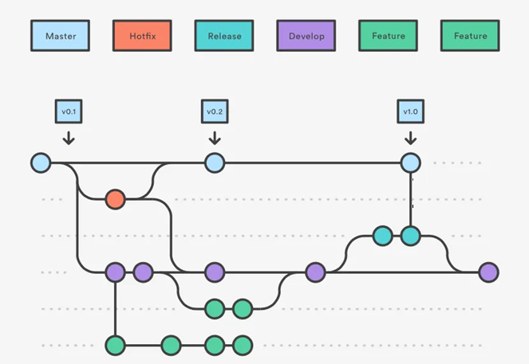

GitHub Desktop — Cheat sheet
Índice de contenidos
🚀 Fundamentos rápidos de Git y GitHub Desktop
Flujo básico de trabajo
Archivos modificados
Cambios preparados
Commits guardados
Conceptos clave
Working Directory (Directorio de Trabajo)
Los archivos en tu carpeta del proyecto. Aquí haces cambios, creas archivos nuevos, editas código.
Staging Area (Área de Preparación)
Los cambios que has seleccionado para incluir en el próximo commit. En GitHub Desktop aparecen con checkmarks.
Repository (Repositorio)
La base de datos de Git que guarda todos los commits y el historial de tu proyecto.
Commits Atómicos
Cada commit debe representar un cambio lógico y completo. Ejemplo: "Agregar validación de email" no "Cambios varios".
Ramas (Branches)
Las ramas te permiten trabajar en características diferentes sin afectar el código principal:
main o master.
# Ejemplos de nombres de ramas descriptivos feature/login-system feature/payment-integration bugfix/header-responsive hotfix/security-patch docs/api-documentation
Pull Requests (PR)
Una Pull Request es una propuesta para fusionar cambios de una rama a otra. Permite:
- Revisión de código antes del merge
- Discusión sobre los cambios
- Tests automáticos
- Historial claro de cambios
🌐 Cómo desplegar en GitHub Pages
Opción 1: Desde la interfaz de GitHub (Recomendado)
- Ve a tu repositorio en GitHub.com
- Haz clic en Settings (Configuración)
- Scroll hacia abajo hasta Pages
- En "Source", selecciona Deploy from a branch
- Selecciona la rama (usualmente
main) y carpeta (/ (root)o/docs) - Haz clic en Save
https://tuusuario.github.io/tu-repositorio en unos minutos.
Opción 2: Con GitHub CLI (Opcional)
# Instalar GitHub CLI primero winget install GitHub.cli # Habilitar GitHub Pages gh api repos/:owner/:repo/pages -X POST -f source[branch]=main -f source[path]=/
# Instalar GitHub CLI # Ubuntu/Debian: sudo apt install gh # macOS: brew install gh # Habilitar GitHub Pages gh api repos/:owner/:repo/pages -X POST -f source[branch]=main -f source[path]=/
Consideraciones importantes
Rama de despliegue
- main: Más común, despliega desde la rama principal
- gh-pages: Rama dedicada solo para el sitio web
Carpeta de origen
- / (root): Todo el repositorio
- /docs: Solo contenido de la carpeta docs/
Troubleshooting común
- 404 Error: Verifica que tengas un archivo
index.htmlen la raíz o carpeta seleccionada - Cambios no se reflejan: GitHub Pages puede tardar hasta 10 minutos en actualizar
- CSS/JS no carga: Verifica las rutas relativas en tu HTML
💻 Trabajo local con GitHub Desktop
Clonar un repositorio
- Abre GitHub Desktop
- Haz clic en File → Clone repository
- Selecciona desde GitHub.com o pega la URL
- Escoge la carpeta local donde clonar
- Haz clic en Clone
Crear una nueva rama
- En GitHub Desktop, haz clic en Current branch
- Haz clic en New branch
- Escribe un nombre descriptivo (ej:
feature/contact-form) - Haz clic en Create branch
Commits parciales por línea
Una de las características más poderosas de GitHub Desktop:
- Ve a la pestaña Changes
- Haz clic en un archivo modificado
- En la vista de diferencias, haz clic en los números de línea
- Selecciona solo las líneas que quieres incluir en este commit
- Escribe un mensaje de commit descriptivo
- Haz clic en Commit to [nombre-de-rama]
Push a GitHub
- Después de hacer commits locales, haz clic en Push origin
- Si es una rama nueva, GitHub Desktop te preguntará si quieres publicarla
- Haz clic en Publish branch
Crear Pull Request desde Desktop
- Haz push de tu rama
- En GitHub Desktop, haz clic en Create Pull Request
- Te llevará al navegador para completar la PR
- Llena el título y descripción
- Haz clic en Create pull request
Stash (Guardar cambios temporalmente)
Amend (Modificar el último commit)
- Realiza cambios adicionales
- En la parte inferior izquierda, marca Amend last commit
- Modifica el mensaje si es necesario
- Haz clic en Commit to [rama]
Merge vs Rebase
Merge
- Conserva el historial completo
- Crea un commit de merge
- Más seguro para principiantes
- Historial puede verse "sucio"
Rebase
- Historial lineal y limpio
- No crea commits de merge
- Más arriesgado si no entiendes bien
- Nunca rebase commits públicos
🌊 GitFlow - Flujo de trabajo profesional
🏗️ Estructura de ramas en GitFlow
Diagrama del flujo GitFlow
🎯 Main (Producción)
Propósito: Código estable listo para producción
Protección: Solo recibe merges de release y hotfix
Tags: Cada merge se etiqueta con versión (v1.0.0)
🔄 Develop (Integración)
Propósito: Rama de integración continua
Recibe: Features completados y merges desde main
Estado: Siempre debe estar funcional para testing
🚀 Feature/<ticket>
Propósito: Desarrollo de nuevas características
Naming: feature/login-system, feature/US-123
Flujo: Sale de develop → PR a develop
📦 Release
Propósito: Preparar nueva versión para producción
Contenido: Bug fixes menores, ajustes de versión
Flujo: develop → release → main (+ tag) → develop
🚨 Hotfix
Propósito: Arreglos críticos en producción
Urgencia: Bugs críticos que no pueden esperar
Flujo: main → hotfix → main (+ tag) → develop
📋 Flujo de trabajo paso a paso
🎯 1. Desarrollo de Feature
# 1. Asegúrate de estar en develop actualizado git checkout develop git pull origin develop # 2. Crear nueva rama feature git checkout -b feature/TICKET-123-login-system # 3. Desarrollar y hacer commits git add . git commit -m "feat: agregar formulario de login" git commit -m "feat: agregar validación de credenciales" # 4. Push de la rama git push origin feature/TICKET-123-login-system # 5. Crear PR: feature/TICKET-123 → develop # 6. Revisar, aprobar y usar "Squash & merge"
En GitHub Desktop - Feature
- Cambiar a rama develop
- Pull latest changes
- Create new branch:
feature/TICKET-123-descripcion - Desarrollar y hacer commits frecuentes
- Push branch cuando esté listo
- Create Pull Request → develop
- En GitHub.com: usar "Squash and merge"
📦 2. Preparar Release
# 1. Crear rama release desde develop git checkout develop git pull origin develop git checkout -b release/v1.2.0 # 2. Ajustes finales (versión, changelog, etc.) git add . git commit -m "chore: bump version to 1.2.0" git commit -m "docs: update changelog for v1.2.0" # 3. Push rama release git push origin release/v1.2.0 # 4. PR: release/v1.2.0 → main # 5. Merge y crear tag v1.2.0 # 6. PR: main → develop (para sincronizar)
🚨 3. Hotfix de Emergencia
# 1. Crear hotfix desde main git checkout main git pull origin main git checkout -b hotfix/v1.2.1-critical-security-fix # 2. Aplicar el fix mínimo necesario git add . git commit -m "fix: resolve critical security vulnerability" # 3. Push hotfix git push origin hotfix/v1.2.1-critical-security-fix # 4. PR urgente: hotfix → main (+ tag v1.2.1) # 5. PR: main → develop (sincronizar el fix)
⚡ GitFlow vs GitHub Flow
🌊 GitFlow (Complejo)
Ideal para:
- Equipos grandes (5+ developers)
- Releases programados
- Múltiples versiones en producción
- Productos con ciclos de QA extensos
⚡ GitHub Flow (Simple)
Ideal para:
- Equipos pequeños (2-5 developers)
- Despliegues continuos
- Aplicaciones web modernas
- Startups y proyectos ágiles
🔧 Configuración de ramas protegidas
Settings → Branches → Add rule
- Branch name pattern:
main - ✅ Require pull request reviews before merging
- ✅ Dismiss stale PR approvals when new commits are pushed
- ✅ Require status checks to pass before merging
- ✅ Require branches to be up to date before merging
- ✅ Include administrators (para disciplina del equipo)
📊 Ejemplo práctico: Ciclo completo
Ejemplo: Desarrollo de feature "User Profile"
Punto de partida
3 días desarrollo
Code review + Squash merge
• Día 1: Crear feature branch, setup básico
• Día 2: Implementar UI y lógica
• Día 3: Tests y refinamiento
• Día 4: PR, review, merge a develop
Con 5 features listas
Testing final
Deploy a producción
💡 Consejos para implementar GitFlow
✅ Mejores prácticas
- Nombres consistentes:
feature/TICKET-123-description - Commits frecuentes en features
- Squash merge para features
- Tags automáticos en releases
- CI/CD en develop y main
❌ Errores comunes
- Desarrollar directamente en develop/main
- Features muy grandes (>1 semana)
- No sincronizar main → develop después de hotfix
- Merge commits innecesarios
- Releases sin testing adecuado
🔧 Resolución de problemas comunes
1. "Olvidé incluir líneas en el commit" → Amend
Solución en GitHub Desktop:
- Haz los cambios que faltaron
- Ve a Changes
- Marca la casilla "Amend last commit"
- Haz clic en Commit to [rama]
# Agregar cambios al staging git add . # Amend del último commit git commit --amend --no-edit
2. "Me equivoqué en un commit ya pusheado" → Revert
Solución en GitHub Desktop:
- Ve a History
- Encuentra el commit problemático
- Haz clic derecho sobre él
- Selecciona Revert this commit
- Push del commit de revert
# Revertir un commit específico git revert [hash-del-commit] # Revertir el último commit git revert HEAD
3. "Conflicto de merge" → Resolución visual
Pasos en GitHub Desktop:
- GitHub Desktop te mostrará los archivos en conflicto
- Haz clic en cada archivo con conflicto
- Verás las diferencias marcadas con
<<<<<<<y>>>>>>> - Edita manualmente el archivo para resolver el conflicto
- Guarda el archivo
- En GitHub Desktop, marca el archivo como resuelto
- Haz commit del merge
<<<<<<< HEAD const title = "Mi aplicación web"; ======= const title = "Aplicación de tareas"; >>>>>>> feature/new-title // Después de resolver: const title = "Mi aplicación de tareas";
4. "Archivos grandes" → Git LFS
Configurar Git LFS:
# Instalar Git LFS git lfs install # Trackear tipos de archivo específicos git lfs track "*.psd" git lfs track "*.mp4" git lfs track "*.zip" # Agregar el archivo .gitattributes git add .gitattributes git commit -m "Add Git LFS tracking"
5. "Problemas CRLF/LF" → .gitattributes
# Archivos de texto: normalizar saltos de línea * text=auto # Archivos específicos siempre LF *.js text eol=lf *.ts text eol=lf *.css text eol=lf *.html text eol=lf *.md text eol=lf # Archivos binarios *.png binary *.jpg binary *.pdf binary
6. "Permisos/rama protegida"
Soluciones:
- Crear PR: En lugar de push directo a main, crea una rama y Pull Request
- Permisos: Contacta al dueño del repo para que te dé permisos de escritura
- Fork: Haz fork del proyecto y trabaja en tu copia
7. "Credenciales HTTPS vs SSH"
HTTPS (Más fácil)
- Usa tu usuario/password de GitHub
- O Personal Access Token
- Funciona en redes corporativas
SSH (Más seguro)
- Requiere generar llaves SSH
- No requiere password cada vez
- Más rápido después de configurar
# Generar nueva llave SSH ssh-keygen -t ed25519 -C "tu-email@ejemplo.com" # Agregar llave al ssh-agent ssh-add ~/.ssh/id_ed25519 # Copiar llave pública (Windows) type ~/.ssh/id_ed25519.pub | clip # Copiar llave pública (Mac) pbcopy < ~/.ssh/id_ed25519.pub
📖 Glosario de términos
🔤 A - C
📁 Branch (Rama)
Definición: Una línea independiente de desarrollo que permite trabajar en características diferentes sin afectar el código principal.
Ejemplo: feature/login-system, bugfix/header-issue
💾 Commit
Definición: Una instantánea de tu proyecto en un momento específico. Cada commit tiene un mensaje descriptivo y un hash único.
Ejemplo: feat: agregar validación de email
📋 Clone
Definición: Crear una copia local de un repositorio remoto en tu máquina.
Ejemplo: git clone https://github.com/user/repo.git
🔀 Checkout
Definición: Cambiar entre ramas o commits específicos en tu repositorio.
Ejemplo: git checkout feature/new-ui
🔤 D - G
🔄 Diff
Definición: La diferencia entre dos versiones de un archivo, mostrando líneas agregadas, modificadas o eliminadas.
Visual: + líneas agregadas, - líneas eliminadas
🍴 Fork
Definición: Crear una copia personal de un repositorio de otra persona en tu cuenta de GitHub.
Uso: Para contribuir a proyectos open source sin permisos directos
📄 .gitignore
Definición: Archivo que especifica qué archivos y carpetas debe ignorar Git.
Ejemplo: node_modules/, *.log, .env
🏠 GitHub
Definición: Plataforma web que hospeda repositorios Git y proporciona herramientas de colaboración.
Servicios: Issues, Pull Requests, GitHub Pages, Actions, etc.
🔤 H - M
🏷️ HEAD
Definición: Puntero que indica el commit actual en el que estás trabajando.
Uso común: HEAD~1 (commit anterior), HEAD~2 (dos commits atrás)
📊 Issue
Definición: Herramienta de GitHub para reportar bugs, solicitar features o discutir mejoras.
Elementos: Título, descripción, labels, assignees, milestones
🔗 Merge
Definición: Combinar cambios de una rama con otra, típicamente de feature branch a main.
Tipos: Fast-forward, three-way merge, squash merge
🎯 Main/Master
Definición: La rama principal del proyecto, contiene el código de producción estable.
Convención: "main" es el nuevo estándar, "master" es el antiguo
🔤 O - R
📦 Origin
Definición: Nombre por defecto del repositorio remoto desde donde clonaste el proyecto.
Comando típico: git push origin main
🔄 Pull
Definición: Descargar y fusionar cambios del repositorio remoto a tu rama local.
Equivale a: git fetch + git merge
📝 Pull Request (PR)
Definición: Propuesta para fusionar cambios de una rama a otra, permite revisión y discusión antes del merge.
Proceso: Crear → Revisar → Aprobar → Merge
⬆️ Push
Definición: Subir commits locales al repositorio remoto.
Ejemplo: git push origin feature/new-login
🔄 Rebase
Definición: Reescribir el historial de commits aplicando cambios de una rama sobre otra de forma lineal.
Ventaja: Historial más limpio sin commits de merge
🗂️ Repository (Repo)
Definición: Directorio que contiene tu proyecto y todo el historial de cambios gestionado por Git.
Contiene: Código, commits, ramas, tags, configuración
↩️ Revert
Definición: Crear un nuevo commit que deshace los cambios de un commit anterior.
Uso: Deshacer cambios problemáticos ya pusheados
🔤 S - Z
📂 Staging Area
Definición: Área intermedia donde preparas los cambios antes de hacer commit.
También llamado: Index, área de preparación
💾 Stash
Definición: Guardar temporalmente cambios no confirmados para trabajar en otra cosa.
Uso: Cambiar de rama sin perder trabajo en progreso
🏷️ Tag
Definición: Etiqueta que marca un punto específico en el historial, típicamente para versiones.
Ejemplo: v1.0.0, v2.1.3, release-2024
🌊 Upstream
Definición: Repositorio original desde el cual hiciste fork, usado para mantener tu fork actualizado.
Configuración: git remote add upstream [URL]
📁 Working Directory
Definición: Tu carpeta de proyecto donde editas archivos, antes de staging y commit.
Estados: Modified, Staged, Committed
🔧 .gitconfig
Definición: Archivo de configuración global de Git con tu identidad y preferencias.
Contiene: user.name, user.email, aliases, configuraciones
~/.gitconfig (home directory)
🚀 Términos avanzados
🔄 Cherry-pick
Definición: Aplicar un commit específico de una rama a otra rama diferente.
Uso: Cuando necesitas solo un commit específico, no toda la rama
🔀 Fast-forward
Definición: Tipo de merge donde no se crea commit de merge porque la rama objetivo no ha cambiado.
Visual: La rama simplemente "avanza" al último commit
📊 Git Flow
Definición: Metodología de branching con ramas específicas: main, develop, feature, release, hotfix.
Para: Proyectos grandes con releases programados
🔍 SHA/Hash
Definición: Identificador único de 40 caracteres para cada commit.
Ejemplo: a1b2c3d4e5f6... (se puede abreviar: a1b2c3d)
🔒 Squash
Definición: Combinar múltiples commits en uno solo para limpiar el historial.
Cuándo usar: Antes de merge para evitar commits "WIP" o "fix typo"
🏃♂️ CI/CD
Definición: Continuous Integration/Continuous Deployment - automatización de tests y despliegues.
En GitHub: GitHub Actions, integración con cada push/PR
# Configuración inicial git config --global user.name "Tu Nombre" git config --global user.email "tu@email.com" # Flujo básico diario git status # Ver estado actual git add . # Agregar todos los cambios git commit -m "mensaje" # Hacer commit git push origin rama # Subir cambios # Trabajo con ramas git branch # Listar ramas git checkout -b nueva-rama # Crear y cambiar a nueva rama git merge otra-rama # Fusionar otra rama a la actual # Sincronización git pull origin main # Bajar últimos cambios git fetch # Descargar sin fusionar
🎯 Área de práctica y contribuciones
🎓 Cómo practicar
Flujo de práctica recomendado
Crea tu copia del proyecto
Descarga a tu máquina
Agrega tu contribución
Guarda tus cambios
Propón tu cambio
📝 Áreas donde puedes contribuir
🌟 Galería de Contribuidores
Agrega tu nombre, GitHub username y una frase motivacional a la lista de contribuidores abajo.
Archivo:
index.html (sección contribuidores)
🔧 Casos de Troubleshooting
¿Has resuelto un problema único? Comparte tu solución en la sección de problemas comunes.
Archivo:
index.html (sección problemas)
📚 Comandos Útiles
Agrega comandos de Git que consideres esenciales o trucos que hayas aprendido.
Archivo:
index.html (nueva subsección)
🎨 Mejoras de Diseño
Mejora el CSS, agrega animaciones, optimiza la experiencia móvil, o agrega modo oscuro.
Archivos:
index.html, CSS inline
📋 Tutorial paso a paso para tu primera contribución
Preparación inicial
- Haz Fork de este repositorio en GitHub
- Clona tu fork:
git clone https://github.com/TU-USERNAME/GitHubCheat.git - Abre GitHub Desktop y agrega el repositorio local
- Crea una nueva rama:
feature/mi-primera-contribucion
# Clona tu fork (reemplaza TU-USERNAME) git clone https://github.com/TU-USERNAME/GitHubCheat.git cd GitHubCheat # Agrega el repositorio original como upstream git remote add upstream https://github.com/USUARIO-ORIGINAL/GitHubCheat.git # Verifica los remotos git remote -v
Haciendo tu contribución
- Encuentra la sección "Galería de Contribuidores" más abajo
- Agrega tu información siguiendo el formato existente
- Guarda el archivo
- En GitHub Desktop, revisa tus cambios
- Haz commit con mensaje descriptivo:
feat: agregar [tu-nombre] a contribuidores - Push de tu rama
- Crea Pull Request desde GitHub.com
🏆 Galería de Contribuidores
👨💻 Creador del Proyecto
Jorge - @tu-usuario
"Aprender Git es como aprender a conducir: al principio da miedo, pero después no puedes vivir sin ello."
📅 Contribución inicial - Enero 2024🌟 Contrubuidor del Proyecto
Jaime Cortes - @JaimeCortes95
"No se que poner pero aqui estoy"
📅 Contribución inicial - Octubre 2025🌟 Contrubuidor del Proyecto
Carlos Rivera - @CarlosRivera99
"No se que poner pero aqui estoy"
📅 Contribución inicial - Octubre 2025🎯 Ejemplo de Contribuidor
Jorge Carrazco - @ana-dev
"GitHub Desktop me ayudó a perder el miedo a Git. ¡Ahora soy una pro en commits!"
📅 Agregó sección de comandos útiles - Enero 2024🎯 Ejemplo de Contribuidor
DEMO - @ana-dev
"GitHub Desktop me ayudó a perder el miedo a Git. ¡Ahora soy una pro en commits!"
📅 Agregó sección de comandos útiles - Enero 2024💡 Ideas para contribuciones avanzadas
🔧 Funcionalidades
- Modo oscuro toggle
- Buscador de comandos
- Generador de .gitignore
- Simulador de conflictos
📚 Contenido
- Sección de GitHub Actions
- Guía de Git Hooks
- Workflows para equipos
- Integración con IDEs
🌍 Internacionalización
- Traducción al inglés
- Versión en portugués
- Adaptación cultural
- Selector de idioma
🎨 UX/UI
- Animaciones CSS
- Mejores iconos
- Responsive design
- Accesibilidad mejorada
📋 Playbook rápido (checklist diario)
🌅 Inicio del día
- Abrir GitHub Desktop
- Pull latest changes de main
- Revisar si hay conflictos
- Crear nueva rama para el feature del día
💻 Durante el desarrollo
- Commits pequeños y frecuentes
- Mensajes de commit descriptivos
- Push de la rama al menos 1x por día
- Revisar cambios antes de commit
🔄 Antes de crear PR
- Pull latest de main
- Merge main en tu branch
- Resolver conflictos si los hay
- Test de funcionalidad completa
- Revisar todos los archivos cambiados
📤 Al crear Pull Request
- Título claro y conciso
- Descripción detallada de cambios
- Screenshots si hay cambios visuales
- Asignar reviewers apropiados
- Linkear issues relacionados
✅ Después del merge
- Cambiar a main branch
- Pull latest changes
- Borrar branch local mergeada
- Verificar deploy en producción
🚨 En caso de emergencia
- Crear hotfix branch desde main
- Fix mínimo y enfocado
- Test exhaustivo del fix
- PR directo a main (fast-track)
- Deploy inmediato después del merge
main. Siempre usa ramas feature, siempre haz PR, siempre revisa antes de merge.
📝 Template de mensaje de commit
# Formato: tipo(ámbito): descripción feat(auth): agregar validación de contraseñas fix(ui): corregir responsive en mobile docs(readme): actualizar instrucciones de instalación style(css): mejorar espaciado en header refactor(utils): simplificar función de validación test(auth): agregar tests para login
🏷️ Template de Pull Request
## 📋 Descripción Breve descripción de los cambios realizados. ## 🔧 Tipo de cambio - [ ] Bug fix (cambio que corrige un problema) - [ ] Nueva funcionalidad (cambio que agrega una funcionalidad) - [ ] Cambio que rompe compatibilidad (fix o feature que causaría que funcionalidad existente no funcione como se esperaba) - [ ] Mejora de documentación ## 🧪 Testing - [ ] He testeado localmente - [ ] He agregado tests que prueban mi fix o funcionalidad - [ ] Tests nuevos y existentes pasan ## 📸 Screenshots (si aplica) [Agregar capturas de pantalla] ## 🔗 Issues relacionados Fixes #123
Recomendaciones y Evolución de Visual Studio y .NET
Guía para programadores — Herramientas, IA y novedades desde .NET Framework 4.6
Consejos generales para Visual Studio
- Configura atajos de teclado personalizados para acelerar tu flujo.
- Utiliza Live Share para colaborar en tiempo real con tu equipo.
- Activa Hot Reload para probar cambios sin reiniciar la app.
- Divide tus proyectos en soluciones modulares para mayor mantenibilidad.
- Integra Git desde el panel de Team Explorer.
Herramientas de IA en Visual Studio 2022
- GitHub Copilot: sugiere código en tiempo real basado en contexto.
- IntelliCode: autocompletado predictivo entrenado con millones de repositorios.
- AI-assisted refactorings: recomendaciones para simplificar y mejorar tu código.
- Integraciones con Azure OpenAI: chat y análisis de código dentro del IDE (preview).
Buenas prácticas con IA
- Revisa siempre las sugerencias de IA antes de aceptarlas.
- Úsala como apoyo, no como reemplazo de buenas prácticas de programación.
- La responsabilidad y seguridad al usar código sugerido, es del equipo completo.
Evolución de .NET Framework (4.6 → 4.8.1)
.NET 4.6 (2015)
C# 6, interpolación de strings, null-conditional, nameof. Base de muchos sistemas legacy.
.NET 4.6.1 – 4.6.2 (2015–2016)
Mejoras en HttpClient, Always Encrypted en SQL Server, soporte de algoritmos SHA-2 y TLS.
.NET 4.7.x (2017–2018)
Mejoras en WPF y WinForms con High DPI, soporte .NET Standard, GC más eficiente.
.NET 4.8 (2019)
Última versión completa. Accesibilidad, TLS 1.3, HTTP/2 en WCF, optimización de UI desktop.
.NET 4.8.1 (2022)
Compatibilidad con Windows 11. Correcciones y soporte extendido. Fin de nuevas features.
De .NET Core a .NET moderno (5 → 9)
.NET Core 1.0–2.x (2016–2018)
Inicio de la era multiplataforma. Llega .NET Standard 2.0 y ASP.NET Core con Razor Pages.
.NET Core 3.0 / 3.1 (2019)
Soporte para WPF y WinForms en Core. C# 8.0 con nullability y async streams.
.NET 5 (2020)
Unificación de .NET Core + Framework. C# 9 con records e init setters.
.NET 6 (2021, LTS)
C# 10, Minimal APIs, Hot Reload, gran mejora en rendimiento. Base recomendada hoy.
.NET 7 (2022)
C# 11, mejoras en Minimal APIs y GC. Release de soporte corto (STS).
.NET 8 (2023, LTS)
C# 12, Blazor United, Native AOT para apps más ligeras.
.NET 9 (2024)
C# 13 (preview), mejoras en cloud-native, containers y MAUI.
Evolución de C#
Versiones Principales
- C# 6 (2015): interpolación, nameof, null-conditional.
- C# 7.x (2017–18): tuplas, pattern matching básico, out var.
- C# 8 (2019): nullability, async streams, rangos.
- C# 9 (2020): records, init-only, with-expressions.
Versiones Recientes
- C# 10 (2021): global usings, file-scoped namespaces, record structs.
- C# 11 (2022): required, generic math, utf8 literals.
- C# 12 (2023): primary constructors, collection expressions.
- C# 13 (2024): params spread, extension types.
- C# 14 (2025 preview): nuevas mejoras en patrones e interop.